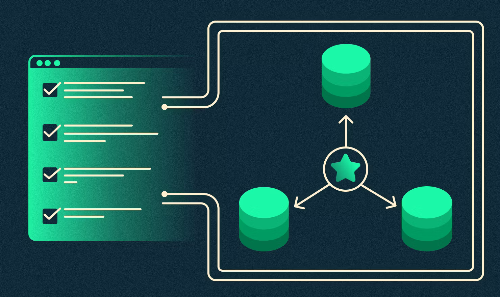
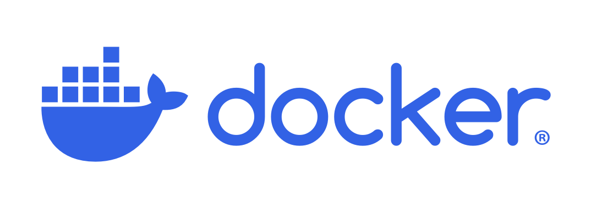
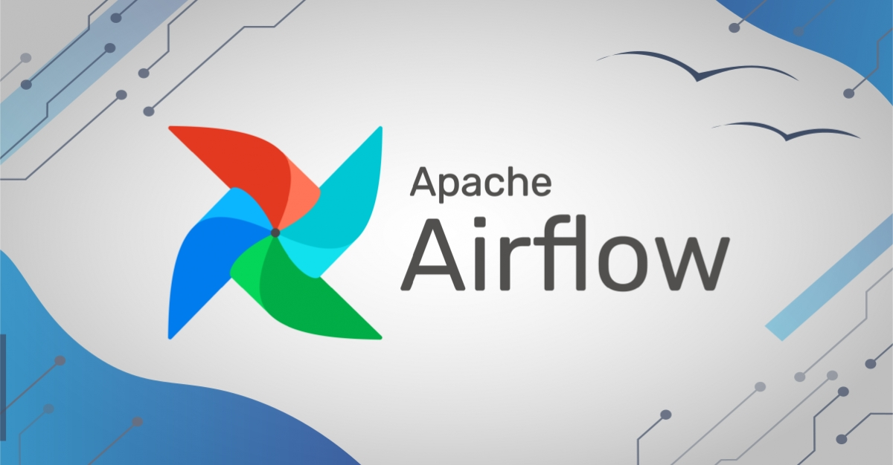
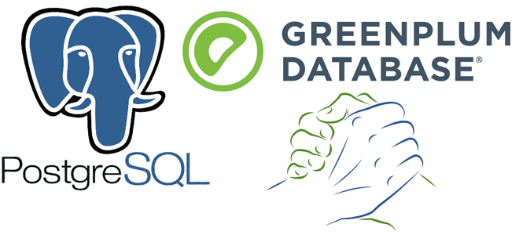
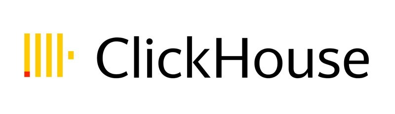
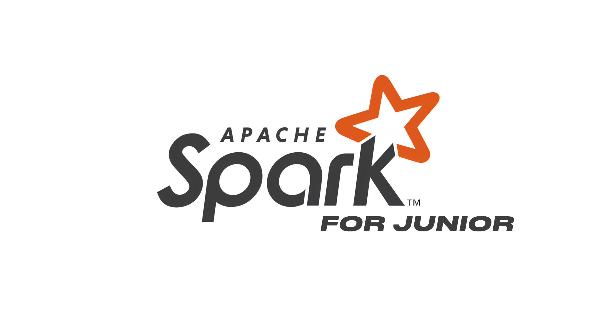
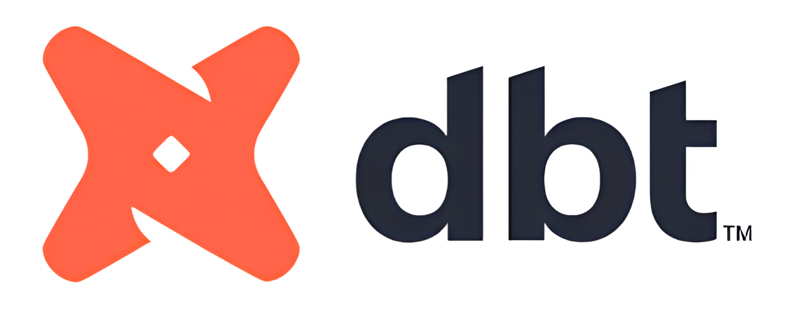
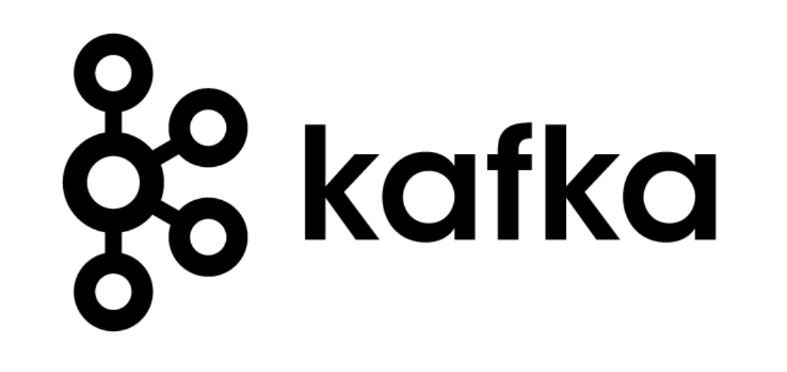

Roadmap | Как стать Дата Инженером
Курс, Roadmap, агрегатор информации для Data Engineer | Актуально на 2025г. | Версия 2.1
Каналы авторов Roadmap | Подпишись!
Хочешь стать автором? Кликай сюда!
0. Деньги
Размер зарплаты зависит от успешности продажи себя на собесе. Если будешь бояться говорить большие суммы, эти суммы будет называть другой более наглый человек. При этом он будет знать меньше тебя, а зарабатывать больше. С этого момента забудь про справедливость. Её нет.
Зарплатные вилки собраны лично мной на собесах за 2024 год:
Учитывайте, что вилки в некоторых компаниях могут быть сильно ниже. Корреляция между размером зарплаты и знаниями не всегда 100%.
Важно! Нет смысла заниматься раз в неделю. Таким темпом вы никогда не дойдете до конца. Лучше тогда потратьте это время на отпуск, семью, друзей. Иначе вы просто спускаете свою жизнь в никуда.
1. Кто такой Дата Инженер?
Чтобы понять, кто такой дата инженер и как им стать, посмотри видео!
Чтобы смотреть Youtube без тормозов, используй нашего бота!
Бот для YOUTUBE Промокод: DE (FREE 2 недели)
➜ Интервью с Senior/Team Lead DE
➜ Мок-собеседование на junior+ Data Engineer
2. Курсы
Дальше тебе нужно научиться писать базовые запросы на SQL и на Python. В тренажерах внизу проходи так, как там просят. Не спрашивай зачем, тебе понадобятся эти инструменты в будущем!
Пройди эти три курса SQL и Python
| Курс | Продолжительность |
|---|---|
| SQL с нуля до оконок | ≈ 1-2 месяца |
| Python с нуля до базы | ≈ 1-2 месяца |
| Продвинутый уровень Python (вложенность, словари, функции) | ≈ 1-2 месяца |
Если задача не получается и ты сидишь с ней уже больше часа, пропускай и переходи к следующей. Потом вернешься и дорешаешь, если будет желание. Не гонись за 100%. Это никто не оценит.
3. Github / Git
Регистрируешься на Github и подключаешь его к своему ПК
➜ Теоритические аспекты на картинках при работе с github / git
➜ Видео по работе с github / git на примере Bootcamp'а
4. Linux / Terminal

Пробуешь привыкнуть и запомнить работу с этими командами в терминале
4. Data Warehouse
Нужно понимать, что такое хранилище данных, какие они бывают, чем отличаются и, как в целом можно грузить данные. Обязательно читай теорию!
5. Нормальные формы
Важная тема про нормализацию таблиц. Всегда спрашивают на собесах. За это надо шарить.
6. Модели данных
Для собесов и в будущем на работе вам надо шарить за модели данных. Читаем и обязательно изучаем SCD по ссылке ниже!
7. Data Vault (Hub - Satellite - Link)
Не факт, что на первой работе вы будете сразу строить Data Vault. Это вообще настолько не факт, что может остаться у вас в теории еще на год вперед. Но на собесах спросить могут. Более того, вам могут дать тестовое на то, чтобы построить простенькую модельку на базе Data Vault. Грубо говоря – это все про то, как связать таблицы между собой...
8. Индексы и партиции

Очень важная тема при работе в классическом DWH с реляционными СУБД. По данной теме любят погонять на собеседованиях.
Теория по индексам и партициям
9. Docker

10. Hadoop

На многих проектах в качестве хранилища используют HDFS (Hadoop) и инструменты экосистемы hadoop. Также по нему часто спрашивают на собеседованиях:
Смотри видео здесь ➜ HDFS | Что это такое и как оно работает? [Hadoop HDFS]
Презентация из видео ➜ HDFS
11. Airflow

Изучать только после осовения Python, SQL, Docker, командной строки Linux. В целом оркестратор Airflow – частый инструмент среди компаний, поэтому он уже классика и шарить за него нужно.
12. Greenplum

Greenplum будет в 50% вакансиях на DE. Остальные будут сидеть на Hadoop + Spark. На первых порах рекомендую базово освоить все три, но окунуться поглубже лишь в один на выбор (Spark | Greenplum). Если хватит сил на освоение обоих, флаг вам в руки!
🧩 Уровень: Junior
Презентация из видео ➜ Greenplum
🚀 Уровень: Junior+ и выше
➜ Простая оптимизация запросов
➜ Реальный кейс оптимизации запроса(видео)
➜ Кейсы и правила хорошего тона при оптимизации запросов
➜ Полезные utils запросы для работы
🧠 Курсы для более глубого погружения
➜ Бесплатный курс от Яндекс.Практикум
13. ClickHouse

ClickHouse будет в 80% вакансиях для постоения витрин данных. В последнее время стала набирать популярность связка GreenPlum + ClickHouse. Не стоит в теорию погружаться с головой и читать всю документацию, а стоит прочитать только то, что описано в статье + ссылки на другие источники.
Обязательно данный инструмент добавляем в свой пет-проект.
➜ Краткий обзор движком с практическими примерами
➜ Видео о ClickHouse от разработчика
14. Spark

Spark изучайте только после того, как научились базово кодить на Python и SQL. Без них будет очень сложно и непонятно.
🧩 Уровень: Junior
Основы работы с Spark, понимание базовых концепций.
- 📚 Теория: Теория по Spark
- 🎥 Видео: Что такое Spark и как им пользоваться?
- 🎥 Видео: Как работают JOIN в Spark
- 🎥 Видео: PartitionBy и BucketBy в Spark
🚀 Уровень: Junior+ и выше
Более глубокое понимание Spark, оптимизация и продвинутые техники.
-
📚 Теория: Архитектура Spark
-
📚 Теория: Продвинутая теория по Spark
15. dbt (data build tool)

Про dbt вы часто можете слышать у модных и продвинутых команд. К этому инструменту подходить уже после изучения Airflow.
➜ Видео от Дмитрия Аношина по dbt
16. Apache Kafka

Для джунов про Кафку можно знать только общие факты. В DE её используют для процессинга данных в реальном времени. На собесах вы можете лишь рассказать теорию из видоса ниже и в целои на этом все. Далеко не во всех компаниях и командах её используют, поэтому пока достаточно просто посмотреть видос.
Для мидлов знания по ней частенько спрашивают ➜ Теория по КАФКЕ
17. Pet Project
Все пет проекты – это на самом деле маленькие копии реальных задач. Поэтому чем глубже вы разберетесь в инструментах, тем легче и свободнее вам будет на собесе и на работе. О пет проекте вы можете рассказывать, что он был развернут у вас на предыдущем месте работы. По факту, может вы этого и не делали, но крайне рекомендую именно адаптировать хотя бы часть каких-то задач. Вам точно должно повезти! Ниже ссылка на примеры проектов:
Будет круто, если ты напишешь свой собственный проект и запушишь его к себе на github. Это сильно поможет уложить в голове многие концепции при работы с данными
18. Теоретические вопросы c собеседований
➜ Типичные вопросы с собесов на все темы
➜ Telegram Bot для подготовки к собесам
19. Резюме и Работа
Все врут. Все приукрашивают. Это сделка двух сторон. Ваша задача продать себя подороже. Задача компании купить вас подешевле, да и выбрать по способнее. По ссылке ниже читаем ЧИТ КОДЫ по поиску работы, зарплатным ожиданиям и оформлению резюме.
20. Рабочие кейсы
Вот где там могут быть проблемы? Просто перекладываем таблички.. А нет. Проблем и ошибок на самом деле больше, чем вы думаете. И хорошо, если бы задачи решались оним универскальным скриптом, но так не происходит. Ниже примеры встречающихся кейсов на работе:
21. Полезные ссылки
Почитать про Data Engineer - Канал Я – Дата Инженер - Все, о чем не говорят вслух про Data Engineer - Канал Инженерообязанный | Из военки в IT - Канал rzv Data Engineering
Найти работу - Сайт агрегатор для Data Engineer - Найти работу для DE Канал 1 - Найти работу для DE Канал 2 - Найти работу для DE Канал 3 - Найти работу для DE Канал 4 - Найти работу для DE Канал 5
Посмотреть про Data Engineer